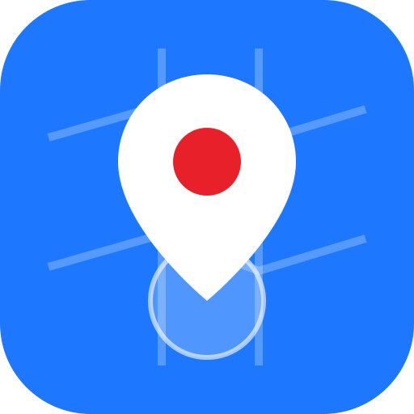

Standortfoto
Standort erfassen
Bereit.
Bild sichern
Einstellungen
Messdauer (s)
Zoomstufen
Beim Öffnen sofort messen
Danach automatisch speichern
Zoom 19 ist die höchste OSM-Stufe (Gebäude, Zäune, Hausnummern). Karte © OpenStreetMap-Mitwirkende, Adresse über Nominatim.